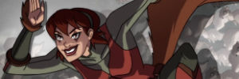

Film and TV News
Squirrel Girl TV Show
Freeform has ordered its second Marvel TV show in New Warriors, the comedy series about a superhero team that includes fan-favorite Doreen Green aka. Squirrel Girl.
John Simm Returning To Doctor Who As The Master
John Simm's cackling, lunatic regeneration of The Master hasn't been seen on Doctor Who since New Year's Day, 2010.
Janet McTeer Cast In Jessica Jones Season 2
While Krysten Ritter's hard-living and hard-punching private eye will be back on our screens as part of The Defenders this August, Jessica Jones is also busy shooting her second season, and Janet McTeer has joined the cast.